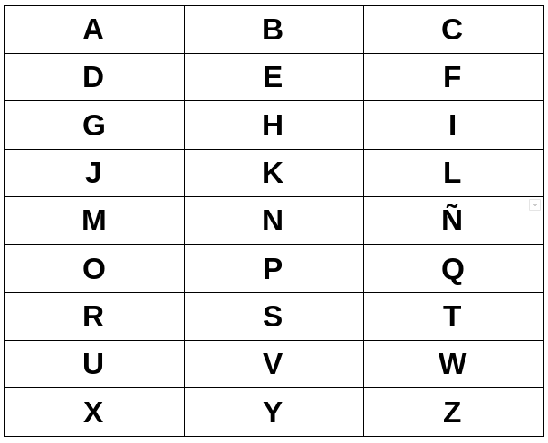

Hi, this project is a phrase or word encryptor in which it replaces each letter of the word with a number, the spaces with a zero, the periods with a / and the commas with a period. To know the numbers that it substitutes, you just have to imagine a 3 x 9 table in which each letter will be placed, to find each letter you just have to first look for the row and then the column. This is best explained by the table below:

The encryptor can only transcribe, at the moment, from letters to numbers, I will continue working on it so that in the next version it will be possible from numbers to letters.
But if you want to help, I invite you to contribute to the code or if you have any suggestions write me to my Twitter.